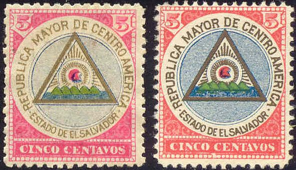
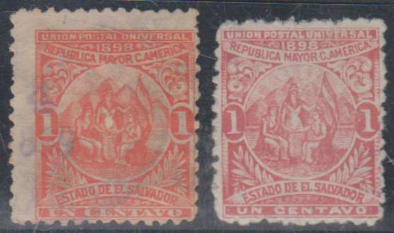
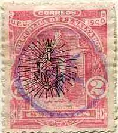
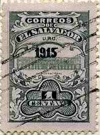

{kind=link}

Return To Catalogue - Salvador 1867-1896 - Miscellaneous
Note: on my website many of the
pictures can not be seen! They are of course present in the
catalogue;
contact me if you want to purchase it.
Note on the stamps of El Salvador from 1890 to 1899: The printer of the stamps (Seebeck) kept the printing plates of the stamps issued during this period. He issued numerous 'reprints' after the stamps were obsolete. These reprints are known as Seebeck issues.
A nice website with stamps of El Salvador can be found at: http://www.seymourfamily.com/Stamp_Collecting.htm.
For stamps of Salvador issued from 1867 to 1896, click here.
10 c red
(Sorry, no picture available yet)
5 c green
1 c blue, yellow, red and green 5 c red , yellow blue and green

(Left: genuine; right: reprint, image obtained thanks to Bill
Wagner)
The genuine 1 c has the mountains outlined in blue and red. The reprint has the mountains outlined only in red.

(Left: genuine 5 c; right: reprint, images obtained from Bill
Wagner)
In the genuine 5 c the ocean is composed of straight lines of blue and red (looks violet). The legend has narrow letters. In the reprint of the 5 c the ocean is composed of curved lines, in blue only, the legend has heavier lettering (information obtained from Bill Wagner).
With overprint 'CORREOS DE OFICIO DE EL SALVADOR' in black or violet (official stamps) 1 c blue, yellow, red and green 5 c red , yellow blue and green With overprint 'FRANQUEO OFICIAL' in an ellipse (official stamps) 1 c blue, yellow, red and green 5 c red , yellow blue and green


1 c orange 2 c red 3 c green 5 c green 10 c blue 12 c violet 13 c red 20 c blue 24 c blue 26 c brown 50 c orange 1 P yellow Overprinted with a small wheel
1 c orange 2 c red 3 c green 5 c green 10 c blue 12 c violet 13 c red 20 c blue Overprinted '1900' (2 types)

1 c orange Overprinted 'Transito Territorial'in black, violet, yellow or red

5 c green Surcharged and overprinted '1900'


'1 centavo' on 10 c blue '2 centavo' on 12 c violet '2 centavo' on 13 c red '2 centavo' on 20 c blue '3 centavo' on 12 c violet '3 centavo' on 50 c orange '5 centavo' on 24 c blue '5 centavo' on 26 c brown '5 centavo' on 1 P yellow Surcharged and overprinted '1900' on stamps with small wheel
Reduced size
2 c on 12 c violet 3 c on 12 c violet 5 c (vertically) on 12 c violet Overprinted with violet 'sun' (1900) 1 c orange 2 c red 3 c green 5 c green With overprint 'FRANQUEO OFICIAL' in an ellipse (official stamps) 1 c orange 2 c red 3 c green 5 c green 10 c blue 12 c violet 13 c red 20 c blue 24 c blue 26 c brown 50 c orange 1 P yellow
I've seen a forged 1 c red (not orange) stamp of this set, in which the words "UN CENTAVO" do not have any serifs and the "1"s at both sides are much thinner. The perforation is very badly done.

1 c brown 2 c green 3 c blue 5 c orange 10 c brown 12 c green 13 c red 24 c blue 26 c red 50 c red 100 c violet
These stamps were printed by Seebeck, who made a large number of reprints. However, the unoverprinted set was never placed in use (thus used stamps cannot exist). This set was the last one to be printed by Seebeck in El Salvador.
Value of the stamps |
|||
vc = very common c = common * = not so common ** = uncommon |
*** = very uncommon R = rare RR = very rare RRR = extremely rare |
||
| Value | Unused | Used | Remarks |
| All values | c | - | |
Overprinted with a small wheel
1 c brown 2 c green 3 c blue 5 c orange 10 c brown 12 c green 13 c red 24 c blue 26 c red 50 c red 100 c violet Surcharged and overprinted '1900'
1 c on 13 c red 2 c on 12 c green 2 c on 13 c red 3 c on 12 c green Surcharged and overprinted '1900' on stamps with small wheel

1 c on 2 c green 1 c on 13 c red 2 c on 12 c green 3 c on 12 c green 5 c on 24 c blue 5 c on 26 c red Overprinted 'FRANQUEO OFICIAL' in fancy letters (official stamps)

1 c brown (blue overprint) 2 c green (blue overprint) 3 c blue 5 c orange (blue overprint) 10 c brown (blue overprint) 12 c green 13 c red (blue overprint) 24 c blue 26 c red (blue overprint) 50 c red (blue overprint) 100 c violet (blue overprint) Overprinted with small wheel and 'FRANQUEO OFICIAL' in fancy letters (official stamps) 1 c brown (blue overprint) 2 c green (blue overprint) 3 c blue 5 c orange (blue overprint) 10 c brown (blue overprint) 13 c red (blue overprint) 26 c red (blue overprint) 50 c red (blue overprint) 100 c violet (blue overprint)
With overprint: large violet 'sun'

Large violet sun overprint
1 c green 2 c red 3 c black 5 c blue 13 c brown 50 c red With overprint: small violet 'sun'

1 c green 2 c red 3 c black 5 c blue 10 c blue 12 c green 13 c brown 24 c black 26 c brown 50 c red '1906' on 10 c blue With overprint 'small violet sun' and perforated with 'T' (postage due stamp) 1 c green With overprint: black 'sun'

1 c green 2 c red 3 c black 5 c blue 10 c blue 12 c green 13 c brown 24 c black 26 c brown '1 centavo' on 2 c red '1 centavo' on 3 c black '1 centavo' on 5 c blue '1905' (2 types, all in blue) on 1 c green '1905' (3 types, all in blue) on 2 c red '1905' (3 types, all in blue) on 3 c black '1905' (4 types, all in blue) on 5 c blue '1905' (blue or black) on 10 c blue '01905' on 1 c green '01905' on 2 c red '01905' on 5 c blue '01905' on 10 c blue '1 1 1 CENTAVO 1' on 2 c red (1905) '1906' (blue) and '* * 2 2' on 26 c brown '1906' (blue) and '* * 3 3' on 26 c brown '1906' on 26 c brown '1906' on 10 c blue Overprinted with 'FRANQUEO OFICIAL' in an ellipse (official stamps), no sun 1 c green 2 c red 3 c black 5 c blue 10 c blue 12 c green 13 c brown 24 c black Overprinted with 'FRANQUEO OFICIAL' in an ellipse (official stamps), with sun 1 c green 26 c yellow 50 c red Overprinted with 'FRANQUEO OFICIAL' in an ellipse and '1905' (official stamps), no sun 3 c black 5 c blue Overprinted 'OFICIAL', also surcharged (1911)

1 c green 3 on 13 c brown 5 on 10 c blue 10 c blue 12 c green 13 c brown 50 on 10 c blue 'UN COLON' on 13 c brown
Reduced size
1 c black (year 1900) 1 c black (year 1903) 1 c black (year 1904, two types, large and small 'C')
1 c green 2 c red 3 c orange 5 c blue 10 c lilac 12 c grey 13 c brown 24 c red 26 c brown 50 c yellow 100 c blue Surcharged 'UN CENTAVO' on 2 c red (1905) '1906 1 centavo' on 2 c red (1906) 1 c on 13 c brown (1905) '1 1 1 CENTAVO 1' on 2 c red (1905) '1 1 1 CENTAVO 1' on 10 c lilac (1905) '1 1 1 CENTAVO 1' on 12 c grey (1905) '1 1 1 CENTAVO 1' on 13 c brown (1905) '3 3 * *' on 13 c brown (1905) '5 CENTAVOS' (red or black) on 12 c grey (1905) '5 5' (red) on 12 c grey (1905) '5 5 5 5' (black, red, or blue, 2 types) on 12 c grey (1905) 6 c on 2 c red (1905) '6 6 6 6' on 5 c blue (1905) '6 6' on 12 c grey (1905) 6 c (black or red) on 12 c grey (1905) 6 c on 13 c brown (1905) Overprinted 'FRANQUEO OFICIAL' (official stamps, 1903) 1 c green 2 c red 3 c orange 5 c blue 10 c lilac 13 c brown 15 c brown 24 c red 26 c brown 50 c yellow 100 c blue Overprinted 'FRANQUEO OFICIAL', further surcharged (official stamps, 1905) 2 on 5 c blue 3 on 10 c lilac 3 on 13 c brown

Some stamps with mute cancels.

1 c green and black 2 c red and black 3 c yellow and black 5 c blue and black 6 c red and black 10 c violet and black 12 c violet and black 13 c brown and black 24 c red and black 26 c brown and black 50 c yellow and black 100 c blue and black With overprint of a 'sun' 1 c green and black 2 c red and black 3 c yellow and black With overprint of a 'sun' and surcharged
1 c on 5 c blue and black 1 c on 6 c red and black 2 c on 6 c red and black 10 c on 6 c red and black With additional inscription 'FRANQUEO OFICIAL' (official stamps) 1 c green and black 2 c red and black 3 c yellow and black 5 c blue and black 10 c violet and black 13 c brown and black 15 c red and black 24 c red and black 50 c yellow and black 100 c blue and black
(Left: genuine, right: forgery, images obtained thanks to Bill
Wagner)
El Salvador : 1907 controls on the Escalon issue. The forgery has a rope coming from the eye of the anchor ; in the genuine one, the rope begins from behind it (Information obtained thanks to Bill Wagner).
Reprints exist of the official stamps.
Overprinted with a 'sun' 1 c green and black 2 c red and black 3 c yellow and black 5 c blue and black 6 c red and black (sun in black or red) 10 c violet and black 12 c violet and black 13 c brown and black 24 c red and black 26 c brown and black 50 c yellow and black 100 c blue and black
Many of these stamps exist without 'sun', with double 'sun' overprint, or inverted 'sun'.
Surcharged
'UN CENTAVO *' on 2 c red and black (1908) 'UN CENTAVO' (black or red) on 2 c red and black '1821 15 septiembre 1909' (red) on 1 c green and black '2 CENTAVOS 1909' on 13 c brown and black '3 CENTAVOS 1909' on 26 c brown and black
One colour (1911), without 'sun' overprint 1 c red 2 c brown 13 c green 24 c yellow 50 c brown One colour, no 'sun', colours changed and overprinted 'S' (1915) 1 c green 2 c red 5 c blue 6 c blue 10 c yellow 12 c brown 50 c violet 100 c brown One colour, no 'sun', colours changed and overprinted '1915'

1 c green 2 c red 5 c blue 6 c blue 10 c yellow 12 c brown 50 c violet 100 c brown Overprinted with 'S' (1915) 1 c green 2 c red 5 c blue 6 c blue 10 c yellow 12 c brown 50 c violet 100 c brown Overprinted with '1915' (1915) 1 c green 2 c red 5 c blue 6 c blue 10 c yellow 12 c brown 50 c violet 100 c brown Overprinted with '1915' and 'OFICIAL' (official stamps 1915) 6 c blue 12 c brown With additional inscription 'FRANQUEO OFICIAL' (official stamps) on paper with dots 1 c green and black 2 c red and black 3 c yellow and black 5 c blue and black 10 c violet and black 13 c violet and black 15 c brown and black 24 c red and black 50 c yellow and black 100 c blue and black With inscription 'FRANQUQO OFICIAL', surcharged 'OFICIAL 1915' 1 c green 2 c red 5 c blue 10 c yellow 50 c violet 100 c brown With inscription 'FRANQUQO OFICIAL', surcharged 'OFICIAL 1915' with 'OFICIAL' barred by 5 lines 2 c red 5 c blue With inscription 'FRANQUQO OFICIAL', surcharged 'OFICIAL 1915' with 'OFICIAL' barred by 5 lines and overprinted 'CORRIENTE' (1918)

1 c green 2 c red 5 c blue 6 c blue 10 c yellow 12 c brown 50 c violet

1 c grey and black 2 c green and black 3 c yellow and black 4 c red and black 5 c violet and black 6 c red and black 10 c lilac and black 12 c blue and black 17 c green and black 19 c red and black 29 c brown and black 50 c yellow and black 100 c blue and black With inscription 'OFICIAL' (official stamps) 2 c green and black 3 c yellow and black 4 c red and black 5 c violet and black 6 c red and black 10 c lilac and black 12 c blue and black 17 c green and black 19 c red and black 29 c brown and black 50 c yellow and black 100 c blue and black
5 c blue and brown (famous man) 6 c orange and brown (famous man) 12 c violet and brown (statue)
1 c blue and black 2 c brown and black 5 c red and black (Francisco Monazan) 6 c green and black (Rafael Campo) 12 c green and black (Trinidad Cabanas) 17 c violet and grey (statue) 19 c red and grey (statue) 29 c orange and grey (building) 50 c blue and grey (hospital) 1 C black and grey (arms of El Salvador)
10 c orange and brown 25 c violet and brown

1 c green 2 c red 5 c blue 6 c blue 10 c brown 12 c violet 17 c orange 25 c brown 29 c black 50 c grey 1 C blue and black Surcharged '1 CENTAVO 1' (2 types) on 6 c blue '1 Centavo 1' on 6 c blue '1 Centavo 1' on 12 c violet '1 Centavo 1' on 17 c orange 2 c on 10 c brown Vale 5 c (black or yellow?) on 50 c grey 6 c (brown or red) on 25 c brown 15 c (red) on 29 c black 15 c (red) on 50 c grey 26 c (blue or green?) on 29 c black 35 c on 50 c grey 60 c (red) on 1 C blue and black Overprinted "OFICIAL" (official stamps)

1 c green 2 c red 5 c blue 6 c blue 10 c brown 12 c violet 17 c orange 25 c brown 29 c black 50 c grey Overprinted "OFICIAL" and 5 red bars and "CORRIENTE" 1 c on 6 c blue 5 c blue 6 c blue Overprinted "OFICIAL" and surcharged (1921) 1 c on 12 c violet

1 c on 1 c green 1 c on 5 c yellow 1 c on 10 c blue 1 c on 25 c green 1 c on 50 c olive 1 c on 1 P grey
{kind=link}